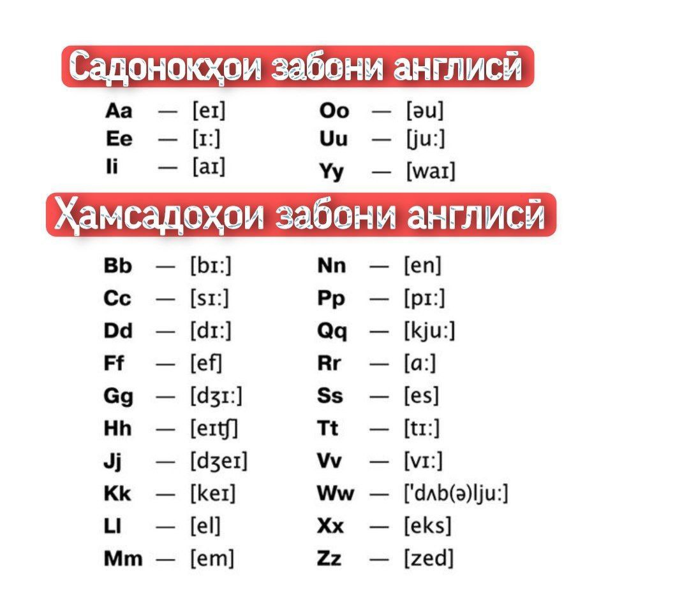

Дар забони англисӣ 26 ҳарф мавҷуд аст. Аз онҳо 6-тояш садонок ва 20-тояш ҳамсадоянд.

📌Дар забони англисӣ 2-навъи ҳиҷо маълум аст: баста ва кушода.
🔴Агар ҳиҷо (асосан калима) бо ҳамсадо ба итмом расад, пас ҳичо баста номида мешавад: border, garden
🟢Агар ҳиҷо (ё калима) бо садонок ба итмом расад, пас ҳиҷо кушода номида мешавад: gamе, rolе...